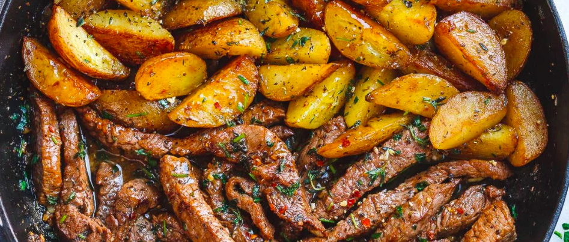

Meat and Potatoes

First I'd like to say a little about why I like the meat. Then, I'll go on discuss about the potatoes
Do I love those potatoes
Ingredients
- Meat
- Potatoes
- Spice
- Oil
- Salt
Steps to make
- Cut potatoes
- Heat up oil
- Cook meat
- Add salt, spice
Back to Homepage